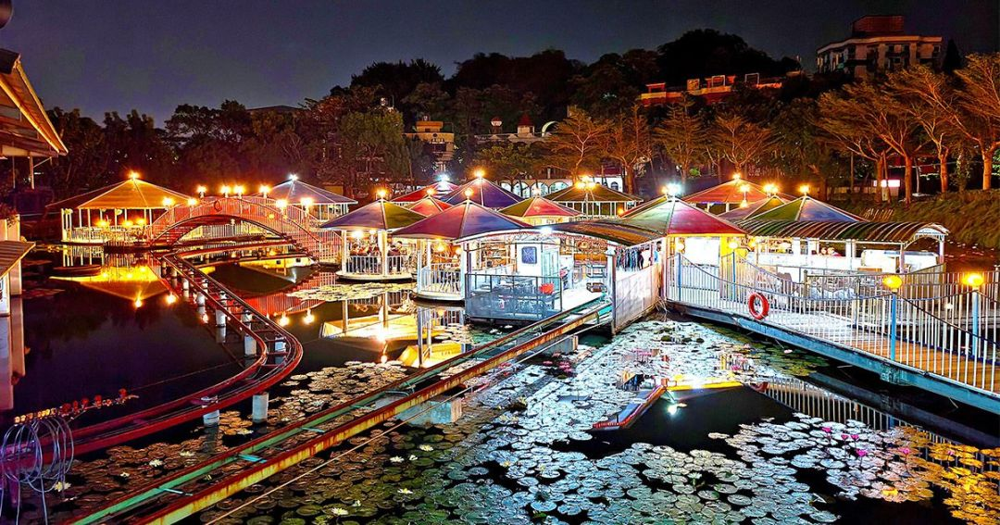
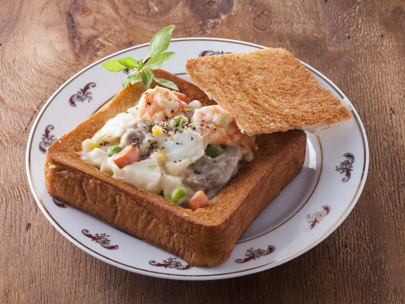
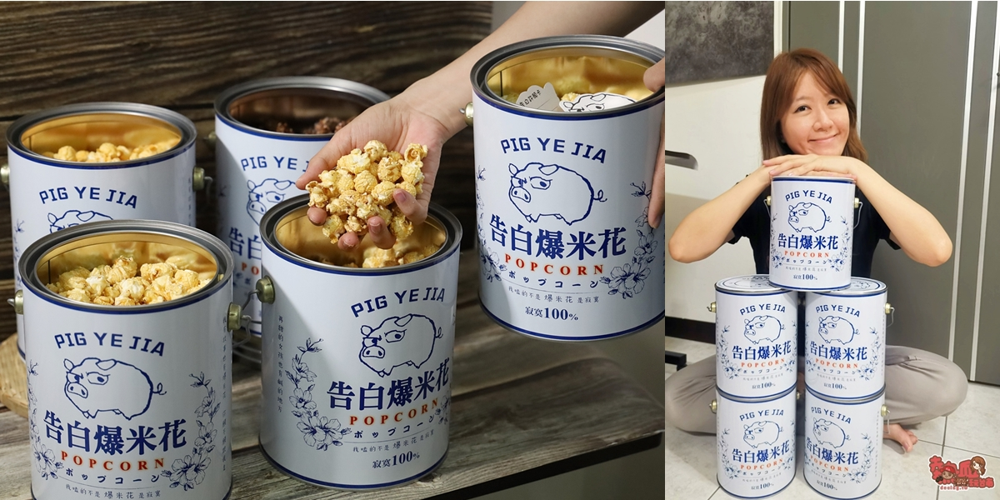

餐廳-翠湖水上餐廳
在觀音山一帶是頗為知名的土雞城餐廳，除了擁有室內用餐空間之外，最特別的就是擁有佔地寬敞的戶外用餐區，而且是座落在湖面上的水上餐廳，不管是白天或是晚上來訪都有不同的風情。
小吃-棺材板
台南康樂市場沙卡里巴商場內的赤崁棺材板，於1942創立，是棺材板的發明者，過去所填的佐料為雞肝、牛奶麵糊，曾被稱為「雞肝板」。如今創新的做法是將吐司在180度油鍋，炸成金黃色，中間切開成了一個袋子，舀入雞肉、花枝為主餡料的白色濃湯，就是著名的台南小吃棺材板。
伴手禮-豬飼料柑仔店
從台南安定區爆紅的豬飼料袋古早味零食「新玉香食品」近期也在台南中西區開起了新店面「豬飼料柑仔店」，這次不只豬飼料袋，更同時引進了許多特色又有趣的零食袋，而且更把這零食袋變成可以直接揹在身上的新潮包，真的非常有梗！不只如此，又推出了全新的豬野家-油漆桶告白爆米花，讓你告白的路上不孤單，告白成功的小秘技就靠他啦~